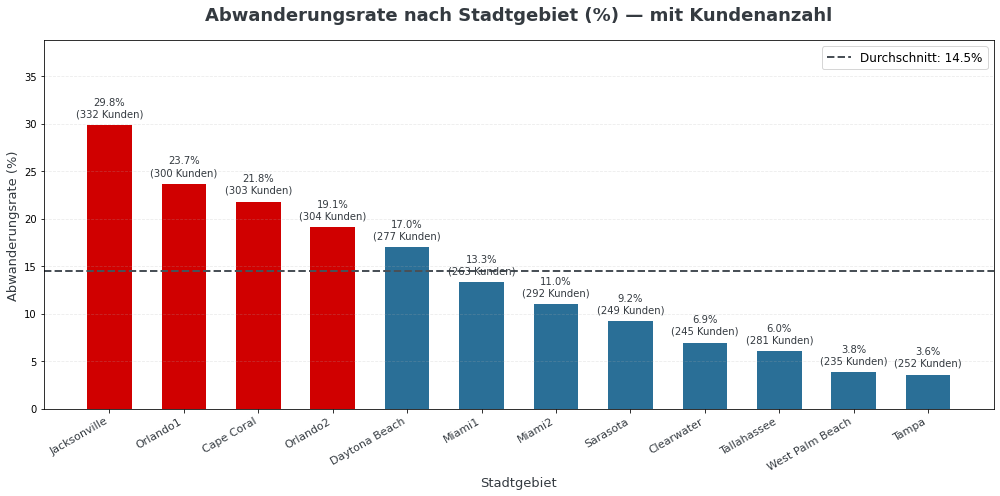
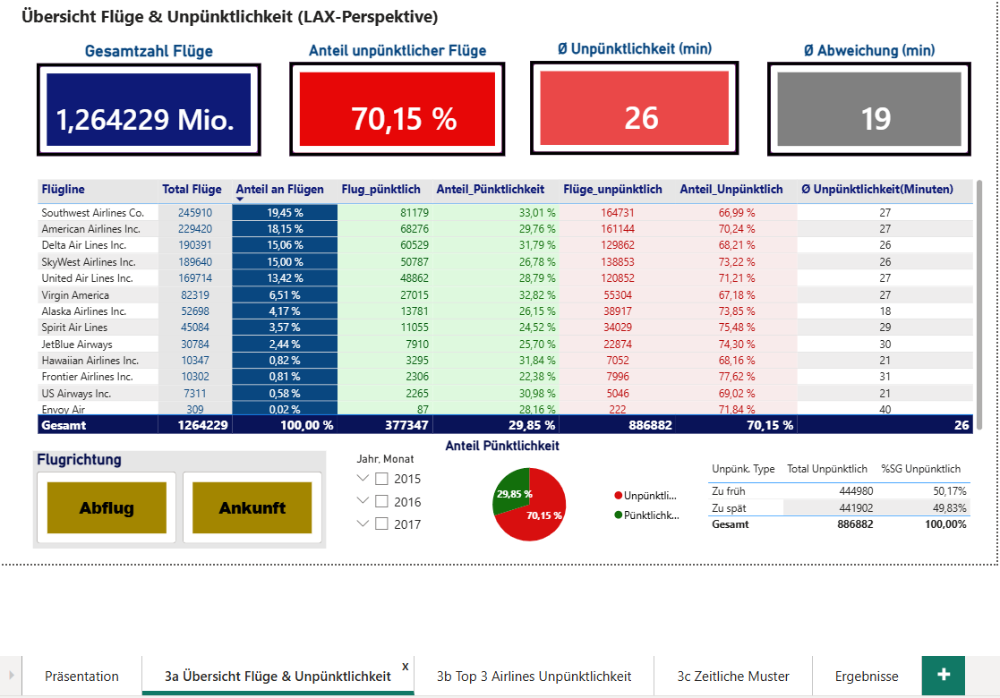

Gloria Cordero
De La Cruz
Wirtschaftsingenieurin · Produktions-IT & Digitalisierung · Datenanalyse
Ich bringe Produktion, IT und Daten zusammen.
Zehn Jahre Projekte bei Volkswagen: Systemeinführung und Prozessdigitalisierung, von der Anforderung bis zum Rollout. Mit SQL, Power BI und Python mache ich jetzt auch die Daten dahinter nutzbar.
Data-Projekte


Fachliche Skills
Produktion & Prozesse
- Stammdatenmanagement (FIS-eQS) PR/Sorten, Baugruppen, Modellwechsel
- Lastenhefte & Anforderungen neue Anlagen & Systeme
- Anlageneinführung & Layouts
- Vorserien- & Anlaufbegleitung bis SOP
- Prozessoptimierung weniger Nacharbeit, +20 % Durchlaufquote
- Fertigungssteuerung Reihenfolge, Produktionsmix
- Montagedigitalisierung FIS Workplace, Cobots
Projekt- & Systemmanagement
- IT- & Digitalisierungsprojekte leiten und steuern Terminplanung, Meilensteine, kritischer Pfad, Budget
- Einführung von Fachanwendungen Rollouts, Testsystem
- Systemintegration IT-Systeme, Anlagen, Datenbanken
- Systembetreuung & Störungsanalyse Key User, IT-Konformität
- Schnittstellenmanagement MX / DE, Dienstleister, Lieferanten
- Projektmanagement ICB4
Daten & BI
- SQL Abfragen, Joins, CTEs
- Power BI Datenmodellierung, DAX
- Python pandas, Regression
- Datenvisualisierung & Storytelling
- KPI-Reporting Perseus, eQS-Stammdaten
FIS-eQS = elektronisches Qualitätssicherungssystem bei Volkswagen
Mein Weg
Profil
Zehn Jahre lang habe ich bei Volkswagen in Mexiko und Deutschland Produktions- und Qualitätssicherungssysteme eingeführt und digitalisiert, von der Anforderung bis zum Rollout.
Mit meiner Weiterbildung zur Datenexpertin (SQL, Power BI, Python) setze ich Prozesse nicht nur um, sondern verstehe und verbessere sie auch mit Daten.
Diese Verbindung aus Praxis und Analyse bringe ich mit: neugierig, lernbereit und mit Freude an der Zusammenarbeit.
- Erfahrung
- 10 Jahre Volkswagen (Puebla & Wolfsburg): Produktions-IT, Systemintegration, Digitalisierung
- Weiterbildung
- Datenexpertin, StackFuel (11/2025–05/2026)
- Zertifikate
- ICB4 Projektmanagement · BI Specialist (SQL, Power BI) · Data Analyst · Python
- Sprachen
- Spanisch (Muttersprache) · Deutsch (C1) · Englisch (B2)
- Verfügbar
- ab sofort